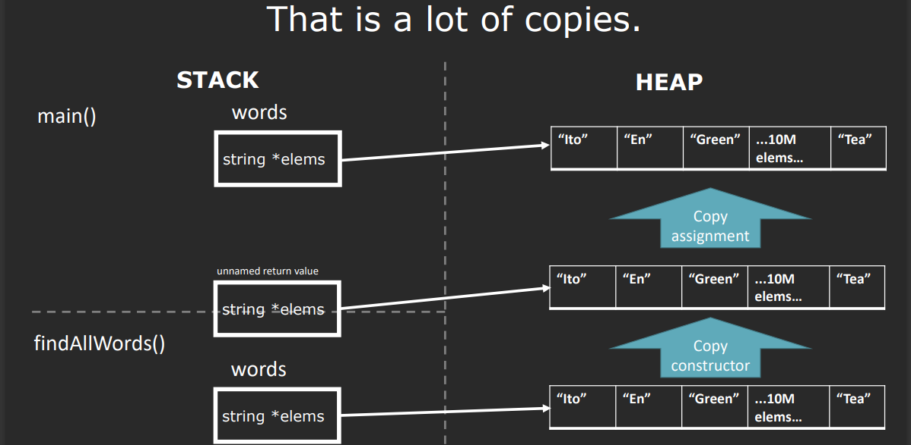
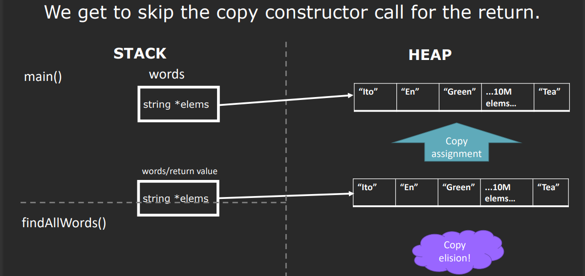

一、C++特殊成员函数简介
- C++自动为类生成的特殊成员函数包括：
- 默认构造函数：无参数创建对象。
- 拷贝构造函数：以另一个现有对象为模板创建新对象。
- 拷贝赋值操作符：用另一个现有对象替换现有对象的内容。
- 析构函数：对象离开作用域时被销毁。
1.1 函数调用示例
在以下示例中，每行代码调用的特殊成员函数是：
1
2
3
4
5
6
7
8
9
10
11
| MyVector<int> function(MyVector<int> vec0) {
MyVector<int> vec1;
MyVector<int> vec2{3, 4, 5};
MyVector<int> vec3();
MyVector<int> vec4(vec2);
MyVector<int> vec5{};
MyVector<int> vec6{vec3 + vec4};
MyVector<int> vec7 = vec4;
vec7 = vec2;
return vec7;
}
|
1.2 拷贝构造函数
拷贝构造函数负责创建对象的深拷贝，必要时进行深度复制。
1
2
3
4
5
| StringVector::StringVector(const StringVector &other)
: _logicalSize(other._logicalSize), _allocatedSize(other._allocatedSize) {
_elems = new ValueType[_allocatedSize];
std::copy(other.begin(), other.end(), begin());
}
|
1.3 拷贝赋值操作符
拷贝赋值操作符需释放对象当前资源后，执行拷贝。注意自赋值情况。
1
2
3
4
5
6
7
8
9
10
| StringVector& StringVector::operator=(const StringVector &rhs) {
if (this != &rhs) {
delete[] _elems;
_logicalSize = rhs._logicalSize;
_allocatedSize = rhs._allocatedSize;
_elems = new ValueType[_allocatedSize];
std::copy(rhs.begin(), rhs.end(), begin());
}
return *this;
}
|
1.4 删除操作
通过显式删除特殊成员函数，可以阻止对象被拷贝。
1
2
3
4
5
6
7
| class LoggedVector {
public:
LoggedVector(int num, int denom);
~LoggedVector();
LoggedVector(const LoggedVector &rhs) = delete;
LoggedVector &operator=(const LoggedVector &rhs) = delete;
};
|
1.5 三法则与零法则
- 三法则：如果你需要自定义析构函数、拷贝构造函数或拷贝赋值操作符中的任何一个，你可能需要定义所有三个，因为这意味着你的类有资源管理需求。
- 零法则：如果默认操作符满足需求，最好不要自定义这些特殊成员函数。
二、拷贝问题与优化
在C++中，频繁的对象拷贝可能导致性能问题。考虑以下代码片段，它演示了在一个简单场景中对象如何被创建和拷贝：
1
2
3
4
5
6
7
8
9
10
11
| StringVector findAllWords(const string &filename) {
StringVector words;
return words;
}
int main() {
StringVector words;
words = findAllWords("words.txt");
}
|
在没有编译器优化的情况下，这段代码会导致多次StringVector对象的创建和拷贝：
main函数中声明的words对象通过默认构造函数创建。findAllWords函数中的words对象通过默认构造函数创建。findAllWords返回时，通过拷贝构造函数创建一个临时对象。- 将临时对象赋值给
main中的words对象，调用拷贝赋值操作符。

为了减少不必要的对象拷贝，C++提供了几种优化机制：
2.1 拷贝省略与返回值优化（RVO）
编译器可以优化掉一些不必要的拷贝，特别是函数返回时的临时对象。这种优化称为返回值优化（RVO），直接在调用方的空间创建返回对象，避免额外的拷贝。现代C++编译器智能地应用RVO，减少性能损耗。

2.2 移动语义
C++11引入的移动语义允许对象的资源“转移”而非传统意义上的拷贝。通过使用移动构造函数和移动赋值操作符，可以有效地将一个对象的状态或资源转移到另一个对象，从而避免深度拷贝带来的开销。
例如：
1
| StringVector words = findAllWords("words.txt");
|
如果findAllWords返回的对象利用移动语义，那么这里将不会发生深度拷贝，而是资源的转移。
更详细的移动语义后续讲解。